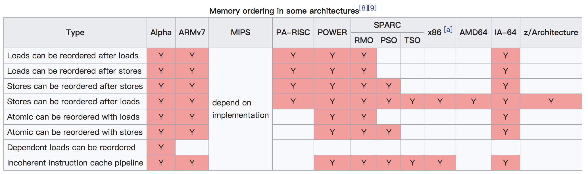

并发编程基础 - 重排序和屏障
本篇介绍指令重排序，optimization barrier 和 memory barrier。
Correct me if I’m wrong.

现代处理器通常并行地执行若干条指令，且可能重新安排内存访问顺序，这种重新排序可以极大地加速程序的执行。编译器也是出于性能优化的目的，可能会修改内存指令的顺序。所以不要认为指令会严格按照它们在源码里出现的顺序执行。在并发编程的时候，为了处理同步，就必须避免指令重排序。显然如果同步原语之后的一条指令在同步原语之前执行，就是很严重的错误（比如 mutex.lock 之后要进入临界区，如果临界区里的指令被重排到了 mutex.lock 的前面是不可接受的）。正确实现的同步原语肯定得通过编译器屏障和内存屏障确保指令重排不影响正确性。
编译期指令重排
在单线程执行的代码里，代码执行的 效果 当然是按照代码顺序依次执行。现代编译器为了优化性能，可能会把一些指令重排，这种效应在代码单线程执行时是无法察觉的（如果察觉到就说明这样的优化过于激进，产生错误的结果）。指令未必会严格按照它们在源代码中出现的顺序。
1 | int Value; |
比如这段代码，Value = x; 和 IsPublished = 1; 在单线程运行时，谁先执行并不影响正确性，编译器可能会把 IsPublished = 1; 的汇编代码生成在 Value = x; 的前面。单线程执行时，即使发生了这样的重排，在两个语句的中间也没有检查每个变量的值（比如 print Value），因此这两句话重排并不影响正确性。
然而在 lock-free 编程的时候，这样的代码可能会由于编译器重排产生错误。假设线程 A 执行 sendValue，线程 B 执行 readValue。线程 A 先对 Value 发布一个值 x，然后标记 IsPublished。线程 B 不断检查 IsPublished，看是否已经有线程发布了值，如果有线程发布了值，那么返回 Value 的值。如果编译器在编译 sendValue 的时候把两个指令重排，线程 B 就可能看到了 IsPublished == 1，然而 Value 并没有被正确赋值，返回一个错误的值。
编译器屏障
编译器屏障，优化屏障，optimization barrier，compiler barrier，看意思就知道说的是一个东西了。optimization barrier 保证编译器不会混淆放在 barrier 之前的汇编指令和它之后的汇编指令。在 Linux kernel 里，优化屏障的代码就是 barrier() 宏，展开成 asm volatile("" ::: "memory");。指令 asm 告诉编译器要插入汇编代码(这里要插入的是空的汇编代码)。 volatile 关键字禁止编译器把 asm 指令和程序中的其他指令重新组合。 memory 关键字强制编译器假设内存中的所有内存单元已经被汇编语言指令修改。所以，编译器不能对 barrier 之前的语句存储在内存单元的值进行假设，不能使用存放在寄存器里的内存单元的值来优化代码。但是注意，优化屏障不保证 CPU 执行汇编指令的时候重排序，这种重排需要内存屏障禁止。
处理器指令重排和内存屏障
现代处理器架构越来越复杂啦，一般是多个核心，每个核心有自己的缓存，又有所有核心共用的缓存，之后才是内存（这是 SMP，还有 NUMA， 总之挺复杂的我也不是很懂，但是理解内存模型这方面知道个大概就行）。CPU寄存器, L1, L2, L3, …, memory，速度依次变慢，容量依次变大，也是计算机系统经典知识了。现代处理器通常并行地执行若干条指令，且可能重新安排内存访问顺序，这种重新排序可以极大地加速程序的执行。总之为了性能，CPU 是支持乱序执行的 (Out-of-Order, OOO)，学体系结构的时候应该都学过。现代处理器非常复杂，而且随着不断发展也越来越复杂，这里不打算细究到底怎么乱序执行，缓存一致性协议啥的。
内存屏障 (memory barrier) 确保，在屏障之后的操作开始执行之前，屏障之前的操作已经完成。所以这个东西叫做屏障(barrier)，也有的地方叫栅栏(fence)，意思就是它前后的指令不能穿越这个 barrier。前面介绍的 optimization barrier 可以阻止编译器进行指令重排。对于处理器指令重排，相对会更加复杂，对于不同的指令重排，有不同的内存屏障。
注意，这里说的内存屏障，和 JVM 里的 write barriers 没关系（JVM 里的写屏障就像是一个 callback 机制）。Memory barrier instructions directly control only the interaction of a CPU with its cache, with its write-buffer that holds stores waiting to be flushed to memory, and/or its buffer of waiting loads or speculatively executed instructions. These effects may lead to further interaction among caches, main memory and other processors.
几乎所有的处理器都至少提供一种粗粒度的 barrier 指令，一般就只叫 Fence，可以确保 Fence 前的 Load 和 Store 严格地在 Fence 后的 Load 和 Store 前执行。无论是哪种处理器，这种一般 barrier 都是很耗时的(一般都接近甚至比原子操作指令更慢)。大多数处理器会另外提供一些细粒度的 barrier。下面是一种普遍的 barrier 分类，基本能比较好地映射到特定真实 CPU 里的指令：
- LoadLoad barrier
序列
Load1; LoadLoad; Load2确保 Load1 比 Load2 以及之后的所有 Load 指令先执行。 - StoreStore barrier
序列
Store1; StoreStore; Store2确保 Store1 的写入可见于所有处理器(比如从缓存刷新到内存)，先发生于 Store2 的写入和所有之后的 Store 指令。 - LoadStore barrier
序列
Load1; LoadStore; Store2确保 Load1 读取数据先发生于 Store2 和之后的所有 Store 指令 写入的数据可见于所有处理器。 - StoreLoad barrier
序列
Store1; StoreLoad; Load2确保 Store1 写入的数据可见于所有处理器先发生于 Load2 和之后的所有 Load 指令的执行。
这几种是常见的指令重排情况和对应的 barrier。在特定的处理器上，并不是这四种重排序都有可能发生，有些处理器体系结构确保了有些重排序是不会发生的。参考下图，x86 上只会出现 StoreLoad 型重排序。
